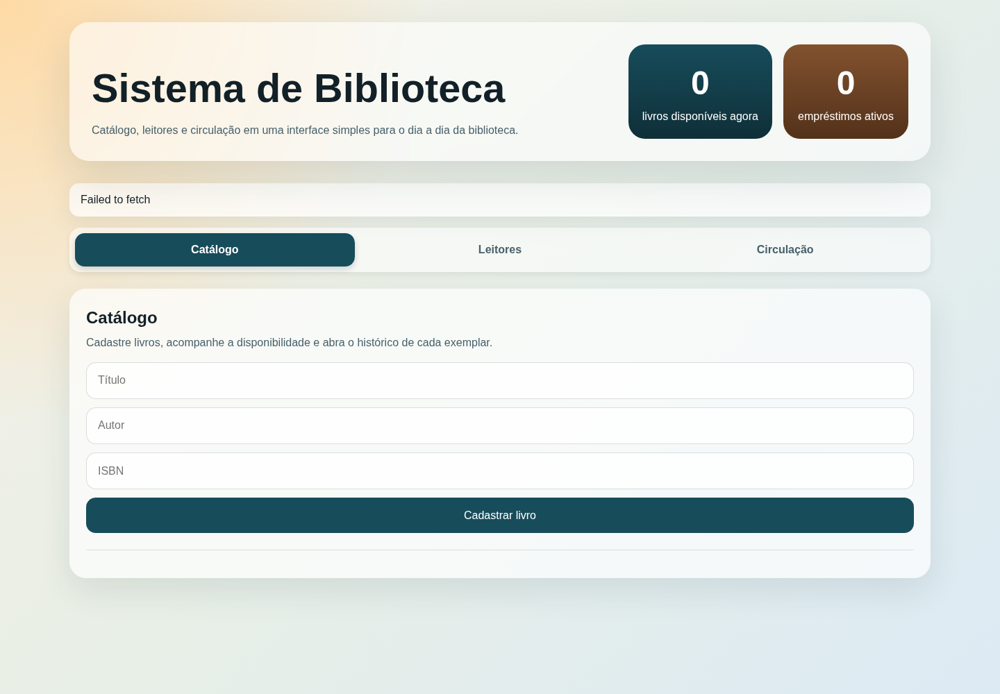

Link da implementação:
https://github.com/GuiC0506/infnet/tree/master/projeto_bloco_engenharia_software_escalavel/TP4
O backend chamava o endpoint POST de Notificações via OpenFeign dentro da operação de empréstimo. Falha ou lentidão no microsserviço propagava-se para a transação principal.
A consulta GET continua síncrona, pois é uma leitura solicitada pelo usuário. A escrita foi desacoplada e passa pelo broker.
| Componente | Responsabilidade | Porta |
|---|---|---|
| React | Interface da biblioteca | 4273 |
| Biblioteca | Catálogo, leitores, circulação e publicação | 8280 |
| RabbitMQ | Roteamento, fila durável, ACK e DLQ | 5672 / 15672 |
| Notificações | Consumo idempotente e histórico | 8281 |
event_outbox na mesma transação do domínio.OutboxPublisher, executado por @Scheduled, envia JSON persistente ao TopicExchange.notificacoes.emprestimos.v1.@RabbitListener consome e verifica o eventId.| Evento | Routing key | Efeito |
|---|---|---|
| EMPRESTIMO_REGISTRADO | biblioteca.emprestimo.registrado.v1 | Aviso com data prevista. |
| DEVOLUCAO_REGISTRADA | biblioteca.emprestimo.devolvido.v1 | Confirmação de devolução. |
{
"eventId": "0e62...c7",
"eventType": "EMPRESTIMO_REGISTRADO",
"eventVersion": 1,
"occurredAt": "2026-09-26T16:55:26Z",
"emprestimoId": 1,
"leitorId": 3,
"livroTitulo": "Arquitetura Orientada a Eventos",
"dataPrevistaDevolucao": "2026-10-30"
}
| Padrão | Implementação | Benefício |
|---|---|---|
| Publish/subscribe | TopicExchange + routing keys | Novos consumidores sem alterar o produtor. |
| Fila de trabalho | Fila durável com consumidores concorrentes | Distribuição de carga e escala horizontal. |
| Transactional Outbox | Evento e domínio no mesmo H2/commit | Não perde eventos quando o broker falha. |
| Retry + Dead Letter | 3 tentativas, backoff, DLX e DLQ | Isola mensagens problemáticas. |
| Idempotent Consumer | eventId com unicidade | Reentregas não duplicam avisos. |
| Request/response | OpenFeign somente para GET | Leitura imediata para o frontend. |
spring-boot-starter-amqpRabbitTemplate@RabbitListenerTopicExchangeQueue e BindingBuilder@ScheduledIntegrações assíncronas, múltiplos interessados no mesmo fato, picos de carga, processos demorados e domínios em que o produtor deve continuar disponível mesmo se consumidores falharem.
Operações pequenas que precisam de resposta imediata e consistência forte entre poucos componentes podem ser mais simples com comunicação síncrona.
| Risco | Mitigação |
|---|---|
| Perda entre banco e broker | Transactional Outbox. |
| Duplicação | eventId único e consumidor idempotente. |
| Mensagem inválida | Retry com backoff e dead-letter queue. |
| Contrato incompatível | eventVersion e routing key terminada em v1. |

Interface React executada pelo Docker Compose durante a validação.
Empréstimo do livro “Arquitetura Orientada a Eventos” gerou EMPRESTIMO_REGISTRADO. A devolução gerou DEVOLUCAO_REGISTRADA. As duas notificações ficaram disponíveis na consulta do leitor.
Com RabbitMQ parado, o empréstimo “Sistemas Resilientes” retornou sucesso e a consulta inicialmente retornou lista vazia. Após reiniciar o broker, a notificação apareceu automaticamente, comprovando a recuperação pela Outbox.
backend Tests run: 6, Failures: 0, Errors: 0, Skipped: 0 BUILD SUCCESS notificacoes-service Tests run: 3, Failures: 0, Errors: 0, Skipped: 0 BUILD SUCCESS docker compose config Configuração válida
docker compose up --build cd backend && mvn test cd ../notificacoes-service && mvn test
O arquivo ROTEIRO_DEMONSTRACAO.md contém a sequência pronta para a gravação, incluindo o cenário com o RabbitMQ temporariamente indisponível.
| Item | Evidência entregue |
|---|---|
| Prós e contras | Seção 4 deste relatório e README. |
| Diferentes padrões | Pub/sub, work queue, Outbox, retry/DLQ, idempotência e request/response. |
| RabbitMQ | Exchange, bindings, filas duráveis, confirm, ACK, retry e DLQ. |
| Abstrações Spring Boot | RabbitTemplate, @RabbitListener, @Scheduled e Beans AMQP. |
| Sistema refatorado | POST síncrono removido; produtor e consumidor desacoplados. |
| Código-fonte | Backend, frontend, microsserviço e Compose no TP4. |
| Git | Arquivos versionados no repositório Git. |
| Documentação e diagramas | README, arquitetura, sequência, contrato e este PDF. |
| Apresentação prática | Roteiro de 5–7 minutos e cenários previamente validados. |
A refatoração eliminou o acoplamento síncrono na escrita e aumentou resiliência, escalabilidade e capacidade de evolução. A solução lida explicitamente com os principais desafios de sistemas orientados a eventos: perda, duplicação, falha persistente e evolução de contrato.